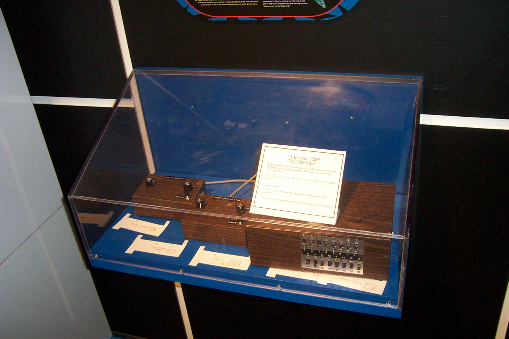

电子游戏的起源（1947-1970）
从最早的实验到第一款商业游戏
1947
Thomas T. Goldsmith Jr. 和 Estle Ray Mann 发明了"阴极射线管娱乐装置"，这是最早的交互式电子游戏尝试
1952
剑桥大学的 A.S. Douglas 开发出了"井字游戏"（OXO），运行在 EDSAC 计算机上
1958
William Higinbotham 在布鲁克海文国家实验室创造了"双人网球"（Tennis for Two），使用示波器显示
1962
Steve Russell 在麻省理工学院开发了"太空大战"（Spacewar!），这是首个广泛传播的电脑游戏
1967
Ralph Baer 开发了"棕色盒子"（Brown Box）原型，后来成为第一台家用游戏机 Magnavox Odyssey
1970
Nolan Bushnell 创造了"电脑空间"（Computer Space），这是第一款投放市场的商业街机游戏
早期电子游戏的特点:
- 大多是实验性质，由科研人员或爱好者开发
- 硬件条件有限，通常依赖于大型计算机或示波器
- 游戏概念简单，多是模拟物理现象或简单规则
- 尚未形成商业模式，主要用于科学展示或娱乐

Tennis for Two (1958) - 首个带有视觉显示的互动游戏

Spacewar! (1962) - MIT 学生创造的首个影响广泛的电脑游戏

Brown Box (1967) - 首款家用游戏机的原型
3 / 16